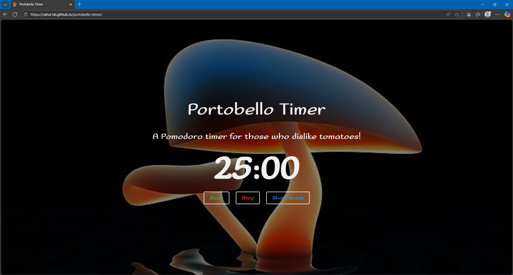

Projects



Portobello Timer
A Pomodoro timer with a twist | Click Here | View on GitHub
I’m a junior full-stack web developer based in Auckland, with hands-on experience building applications
using JavaScript, Node.js, React.js, Knex.js, and Git/GitHub. I’ve worked on both independent and team
projects, applying Agile methodologies and integrating APIs to create responsive, functional applications.
My journey has included formal training at Enspiral Dev Academy, internships supporting SMEs with their
eCommerce platforms, and a steady stream of personal projects that let me explore front-end and back-end
development.
Before tech, I built my work ethic in high-pressure environments like Carl’s Jr, where I managed shifts,
solved problems on the fly, and learned the value of teamwork and process. That background taught me
adaptability, leadership, and attention to detail—skills I now apply in coding and project work. My goal is
to grow as a developer by contributing to meaningful projects, collaborating with others, and continuing to
sharpen both my technical expertise and creative problem-solving.
A Pomodoro timer with a twist | Click Here | View on GitHub